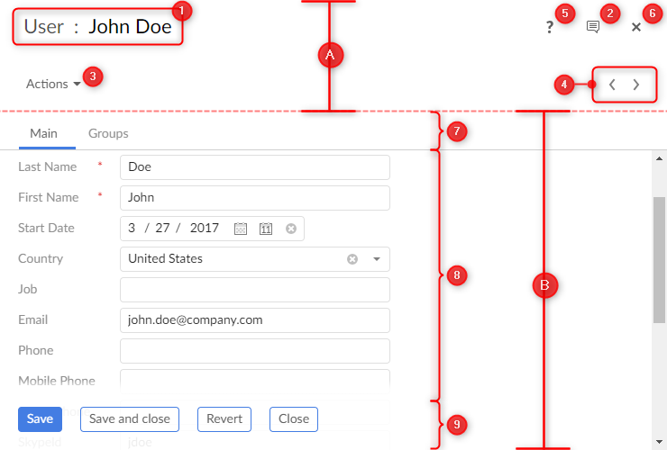

A user service is an extension to TIBCO EBX® that provides a graphical user interface (GUI) allowing users to access specific or advanced functionalities.
An API is available allowing the development of powerful custom user services using the same visual components and data validation mechanisms as standard EBX® user interfaces.
User services exist in different types called natures. The nature defines the minimal elements (dataspace, dataset, table, record...) that need to be selected to execute the service. The following table lists the available natures.
Nature | Description |
|---|---|
Dataspace | The nature of a user service that can be launched from the actions menu of a dataspace (branch or snapshot) or from any context where the current selection implies selecting a dataspace. |
Dataset | The nature of a user service that can be launched from the actions menu of a dataset or from any context where the current selection implies selecting a dataset. |
TableView | The nature of a user service that can be launched from the toolbar of a table, regardless of the selected view, or from any context where the current selection implies selecting a table. |
Record | The nature of a user service that can be launched from the toolbar of a record form or from any context where the current selection implies selecting a single record. |
Hierarchy | The nature of a user service that can be launched from the toolbar of a table when a hierarchy view is selected. |
HierarchyNode | The nature of a user service that can be launched from the menu of a table hierarchy view node. Currently, only record hierarchy nodes are supported. |
Association | The nature of a user service that can be launched from the target table view of an association or for any context where the current selection implies selecting the target table view of an association. |
AssociationRecord | The nature of a user service that can be launched from the form of a target record of an association node or from any context where the current selection implies selecting a single association target record. |
A user service can be declared at two levels:
Module,
Data model.
A service declared by a data model can only be launched when the current selection includes a dataset of this model. The user service cannot be of the Dataspace nature.
A service declared by a module may be launched for any dataspace or dataset.
The declaration can add restrictions on selections that are valid for the user service.
On the following figure are displayed the functional areas of a user service.

A. Header B. Form |
|
Most areas are optional and customizable. Refer to Quick start, Implementing a user service and Declaring a user service for more details.
Before the 5.8.0 version, user services were declared in XML and based on Servlet/JSP. Although this type of declaration should no longer be used, the legacy documentation is still available.